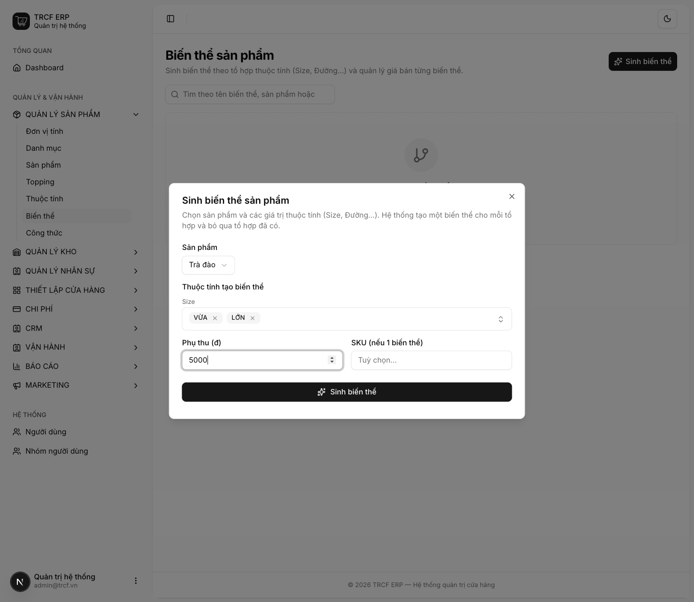
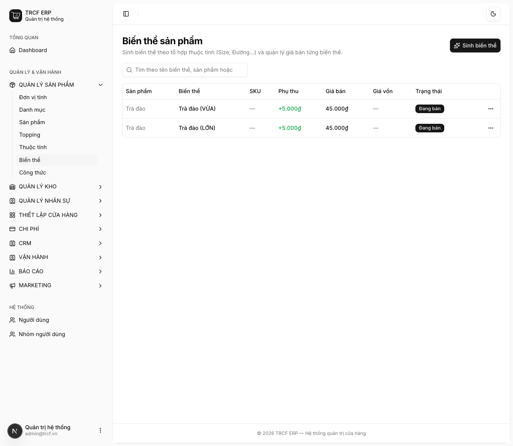
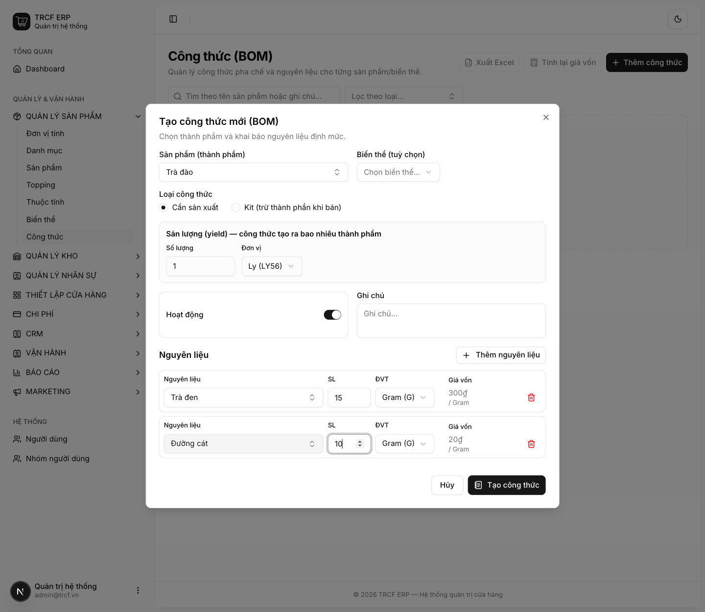
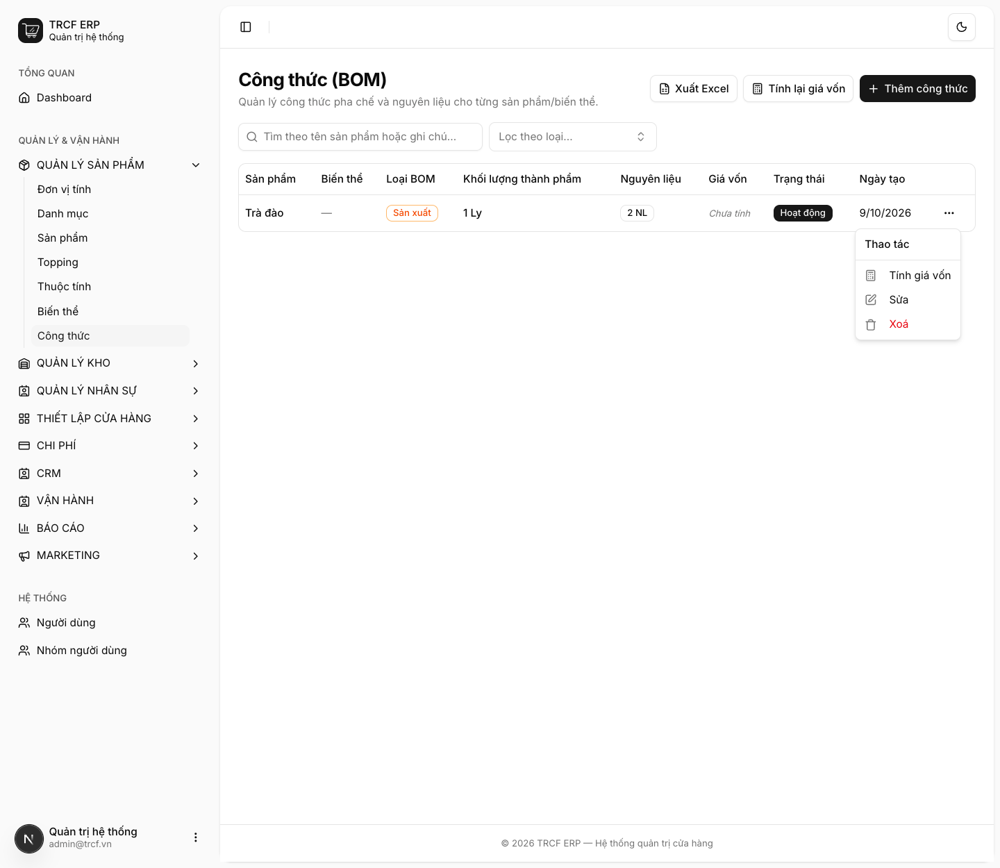

Chương 3 · Quản lý sản phẩm
3.5 Cấu hình công thức pha chế và biến thể
1. Đường dẫn vào chức năng
Menu trái: Quản lý sản phẩm → Biến thể (địa chỉ /product-variants).
và Quản lý sản phẩm → Công thức (địa chỉ /boms).
2. Ví dụ nền và các bước thực hiện
Ví dụ: món "Trà đào" giá 40.000, có size VỪA và LỚN (phụ thu 5.000).
- Công thức: "Trà đen" 15 g (300đ/g) + "Đường cát" 10 g (20đ/g).
- Sản lượng 1 ly → giá vốn = 15×300 + 10×20 = 4.700₫.
Bước 1Sinh biến thể
- Vào Quản lý sản phẩm → Biến thể.
- Bấm Sinh biến thể.
- Sản phẩm: chọn "Trà đào".
- Size: chọn "VỪA" và "LỚN".
- Phụ thu (đ): nhập "5000".
- Bấm nút Sinh biến thể trong hộp thoại.

Bước 2Kiểm tra danh sách biến thể
- Có 2 dòng: "Trà đào (VỪA)", "Trà đào (LỚN)".
- Cột Giá bán hiện "45.000₫" (40.000 + phụ thu 5.000).
- Đây là giá thu ngân thấy trên POS.

Bước 3Tạo công thức
- Vào Quản lý sản phẩm → Công thức.
- Bấm Thêm công thức.
- Sản phẩm (thành phẩm): chọn "Trà đào".
- Loại công thức: giữ "Cần sản xuất".
- Sản lượng (yield): giữ "1", đơn vị "Ly".
- Bấm Thêm nguyên liệu hai lần.
- Dòng 1: chọn "Trà đen", SL "15", ĐVT "Gram (G)".
- Dòng 2: chọn "Đường cát", SL "10", ĐVT "Gram (G)".
- Bấm nút Tạo công thức.

Bước 4Mở menu dòng công thức
- Công thức mới có Giá vốn "Chưa tính".
- Bấm nút … ở cuối dòng.
- Menu có: Tính giá vốn, Sửa, Xoá.

Bước 5Tính giá vốn
- Chọn Tính giá vốn.
- Thấy thông báo “Đã tính giá vốn công thức”.
- Cột Giá vốn hiện "4.700₫".
- Tính cả loạt: bấm Tính lại giá vốn ở đầu trang.

3. Giải thích các trường
Sinh biến thể
| Trường | Điền gì |
|---|---|
| Sản phẩm | Món gốc cần tách size |
| Giá trị thuộc tính | Chọn nhiều. Hệ thống sinh mỗi tổ hợp một biến thể |
| Phụ thu | Giá biến thể = giá sản phẩm gốc + phụ thu |
| SKU | Chỉ dùng khi sinh đúng 1 biến thể |
Công thức (BOM)
| Trường | Điền gì | Bắt buộc |
|---|---|---|
| Sản phẩm (thành phẩm) | Món cần công thức. Danh sách chỉ hiện sản phẩm đã bật Sản xuất | ✅ |
| Biến thể | Bỏ trống: công thức chung mọi size. Chọn size: công thức riêng size đó | — |
| Loại công thức | Cần sản xuất hoặc Kit (xem bảng dưới) | ✅ |
| Sản lượng (yield) | Công thức làm ra bao nhiêu thành phẩm. Ủ một mẻ được 20 ly: điền 20 | ✅ |
| Hoạt động | Tắt: công thức tạm ngừng dùng | — |
| Nguyên liệu | Hàng + định lượng (SL) + đơn vị (ĐVT) | ✅ |
Hai loại công thức
| Loại | Trừ kho khi nào | Dùng cho |
|---|---|---|
| Cần sản xuất | Khi lập phiếu chế biến (6.4) | Bán thành phẩm ủ trước: cà phê cốt, trà ủ, syrup |
| Kit | Ngay lúc bán, tự trừ thành phần | Combo, món ráp tại chỗ không qua chế biến |
Cách tính giá vốn
giá vốn = tổng (giá vốn nguyên liệu × định lượng đã quy đổi) ÷ sản lượng
- Sản phẩm có nhiều công thức đang hoạt động: lấy công thức rẻ nhất.
4. Lưu ý quan trọng
⚠️
Nguyên liệu có giá vốn = 0 làm giá vốn món sai.
- Sau khi tính, hệ thống cảnh báo tên nguyên liệu chưa có giá.
- Giá vốn nguyên liệu tự cập nhật mỗi lần nhập hàng.
- Nguyên liệu chưa nhập lần nào thì vẫn là 0.
⚠️
Công thức nhiều tầng phải bấm tính hai lần.
- Ví dụ "Trà đào" dùng "trà ủ", "trà ủ" có công thức riêng.
- Lần 1: tính giá "trà ủ".
- Lần 2: đưa giá đó vào "Trà đào".
⚠️
Danh sách biến thể hiện giá đã cộng phụ thu.
- Đây là giá thu ngân thấy trên POS, không phải giá gốc.
💡
Sửa, tắt hoặc xoá công thức thì giá vốn tự tính lại ngay. Xoá hết công thức đang hoạt động thì giá vốn giữ giá cuối cùng, không tụt về 0.
💡
Đơn vị trong công thức được phép khác đơn vị tồn kho. Khai 18 gram trong khi kho quản lý theo kg vẫn đúng, hệ thống tự quy đổi.
💡
Chọn 2 thuộc tính (Size 3 giá trị × Đế 2 loại) sinh 6 biến thể. Sinh lại lần nữa không tạo trùng, hệ thống bỏ qua tổ hợp đã có.